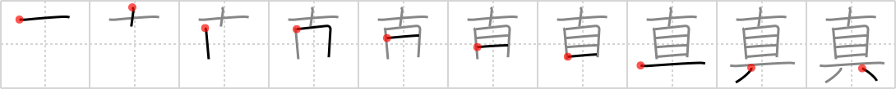

真
← →
true

Reading:
On-Yomi: シン — Kun-Yomi: ま、ま-、まこと
Heisig story:
Here again we meet the composite element, eye of the needle, which here combines with tool to give us a measure of what is true and what is not.
Koohii stories:
1) [pmbeddall] 2-10-2007(262): A compass is a tool with a needle on top that points to true north.
2) [indigo] 5-12-2007(159): Ten tools are all a true craftsman needs.
3) [sutebun] 8-9-2007(57): It's true that I got a needle stuck in my eye once. Luckily, we had a tool to pull the needle out from my eye. True story.
4) [eltheoldsoul] 12-9-2008(56): Ten eyes working together are the best tools to see what's true.
5) [dmohamed] 4-7-2008(46): Cross my heart and hope to die, stick a needle in my eye is a tool used by children to affirm what they said as being true.